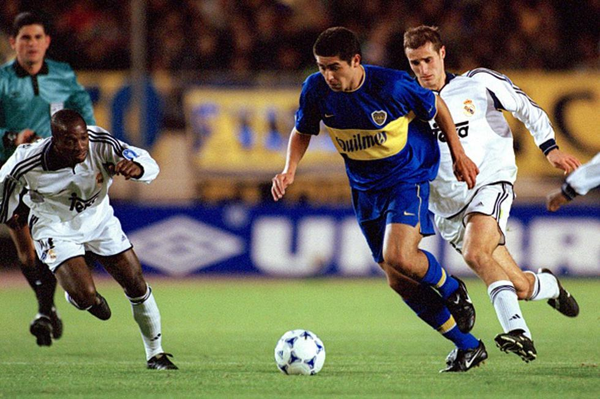
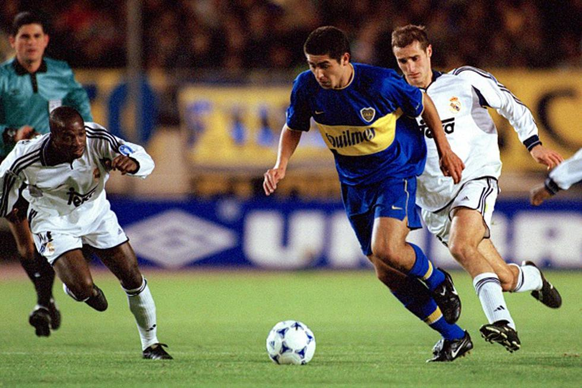
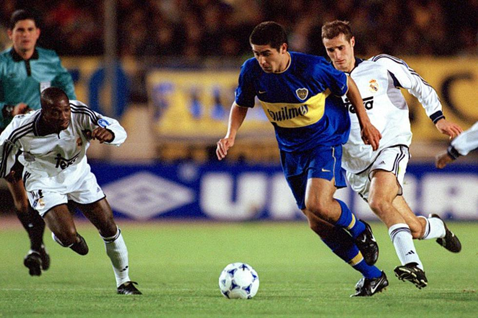

El equipo del Toto Lorenzo alcanzó la cima del mundo tras empatar 2-2 en la Bombonera y vencer 3-0 a Borussia Mönchengladbach en Alemania
2000
Boca logró su segunda Copa del Mundo con un triunfo por 2-1 ante el poderoso Real Madrid de España, en Tokio, con dos goles de Martín Palermo.

2003
Otro gigante del mundo como el Milan de Italia quedó de rodillas ante el Boca de Bianchi en Yokohama, Japón, tras el 1-1 en los 90 minutos y la apasionante definición por penales.


 
